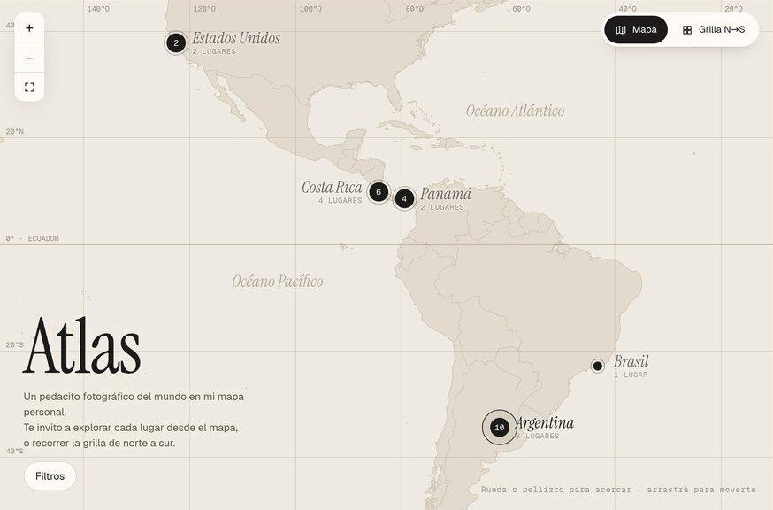
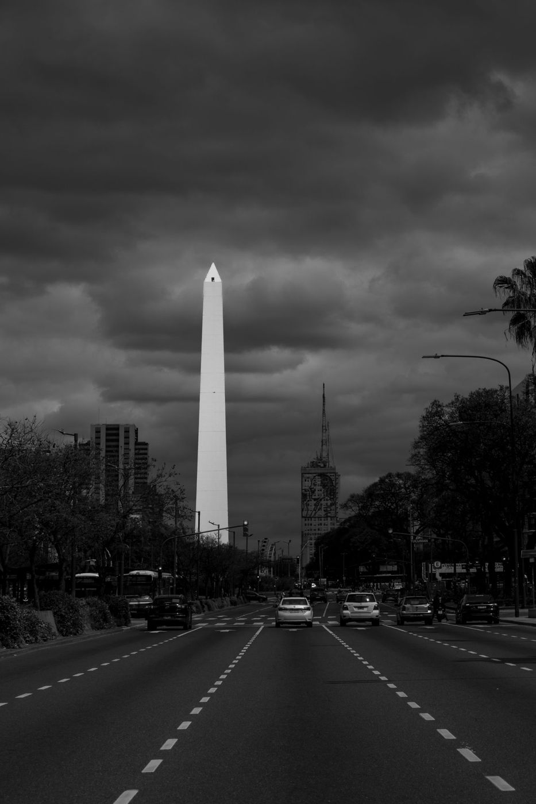
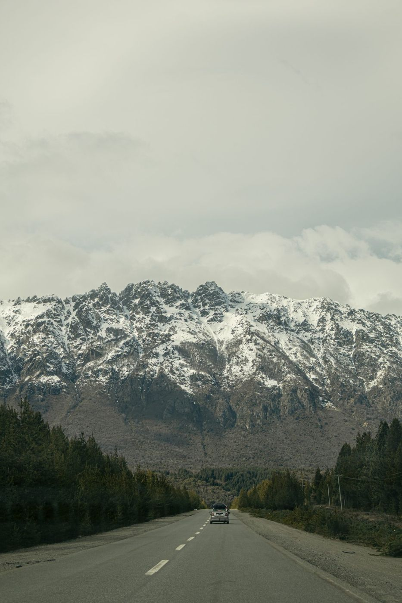
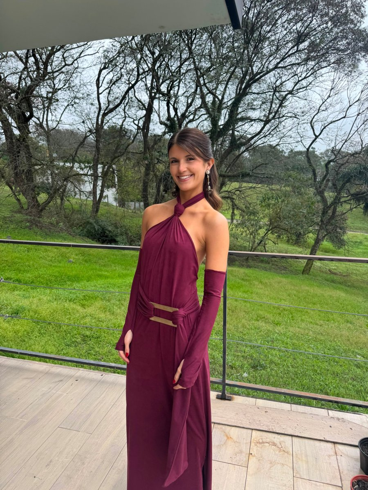
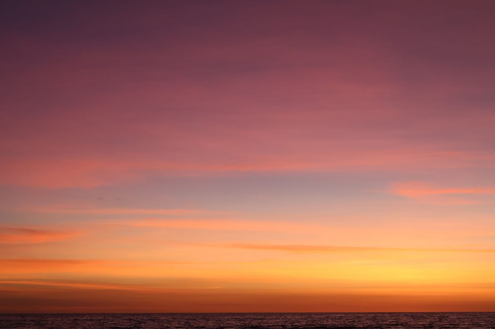
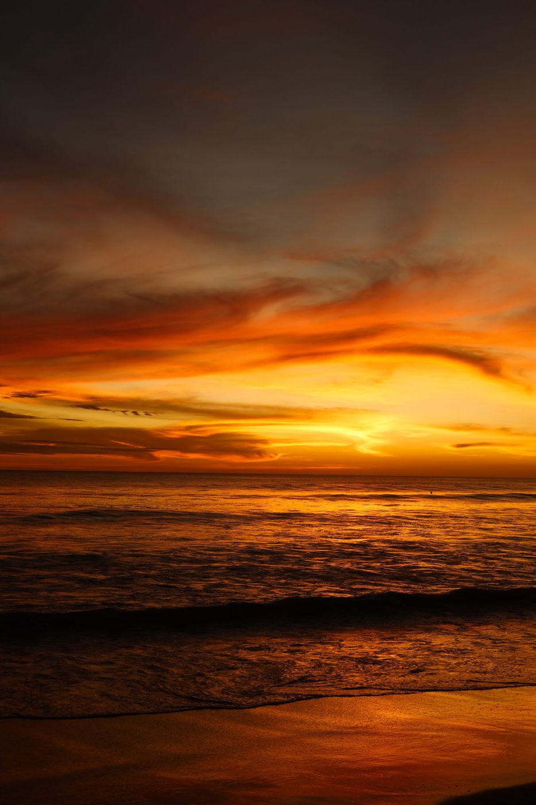
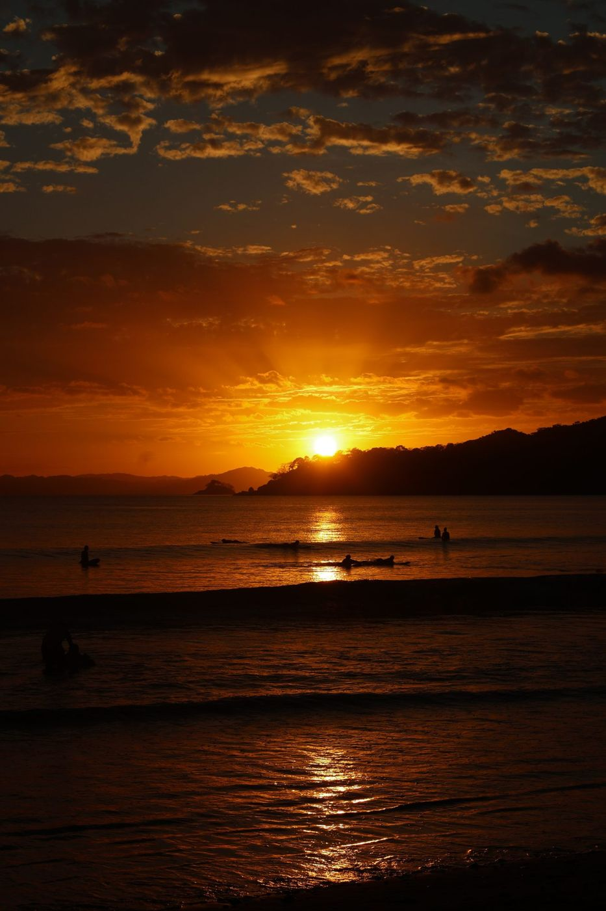

Siendo, un poquito de todo.
Integrando todas mis versiones aquí.
No sé dónde voy a estar en 10 años. Sí sé que voy a estar redescubriéndome, aprendiendo y creando.
Jousie
Escribime y charlamos.

23 obras · 5 paísesAbrir el Atlas Explorá cada lugar desde el mapaPapel Hahnemühle, canvas o enmarcado, con o sin paspartú. Precio a confirmar por obra.


El ciclo lunar y la astrología como herramienta de autoconocimiento. Una invitación a reconocer nuestra naturaleza cíclica y la energía disponible de cada uno.
Reflexionar sobre qué sostengo por comodidad y costumbre, para actualizarnos y vivir en más coherencia con quien somos hoy.
Un pedacito de lo que hay en mi colección de cuadernos, en versión redes.



